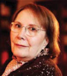

(1929 - )

Siyasi kavgalarla birlikte en derin aşklar, çığlık çığlığa haykıran oyun kahramanlarının yanı sıra çıtını çıkarmadan da yaşayabilen kadın karakterler Adalet Ağaoğlu ile girdi Türk edebiyatına. Bir yandan tiyatro oyunlarıyla, bir yandan romanlarıyla tüm bir kuşağın kadınlarının sancılarını seslendirdi yazar Adalet Ağaoğlu...
1929'da Ankara'nın Nallıhan ilçesinde doğdu. Dört çocuklu bir ailenin tek kızı ve oyuncu Güner Sümer'in (1936 – 1977) ablasıdır. Ortaöğrenimini 1946'da Ankara Kız Lisesi'nde tamamladı. 1950'de Ankara Üniversitesi Dil Tarih Coğrafya Fakültesi'nin Fransız Dili ve Edebiyatı Bölümü'nü bitirdi. Açılan bir sınavla Ankara Radyosu'na girdi. 1951-1971 yılları arasında TRT'de çeşitli görevlerde bulundu. Aynı dönemde oyuncu ve yönetmen dört arkadaşıyla birlikte (Kartal Tibet, Üner İlsever, Çetin Köroğlu, Nur Sabuncu) Ankara'nın ilk özel tiyatrosu olan Meydan Sahnesi'ni kurdu ve Meydan Sahne Dergisi'ni çıkardı. 12 Mart Darbesi'nin ardından, kurumun özerkliğine el konulması sonucu TRT Radyo Dairesi Başkanlığı'ndan istifa etti. Yazmaya 1946'da Ulus gazetesinde yayınlanan tiyatro eleştirileriyle başladı. 1948-1950 arasında Kaynak dergisinde şiirleri yayınlandı. Sevim Uzgören'le birlikte kaleme aldığı Bir Oyun Yazalım 1953'te Ankara Küçük Tiyatro'da sahnelendi. İlk romanının yayınladığı 1973'e kadar sadece tiyatro yazarlığıyla ilgilendi.
Adalet Ağaoğlu daha öğrencilik yıllarında başladığı yazarlığı 1970'den sonra tek mesleği olarak benimsedi. Radyo ve sahne oyunlarını romanlar, öykü, anı ve deneme kitapları izledi. Bu çalışmalarında hayatın değişim ve dönüşümlerine duyarlı yaklaşımıyla dikkat çekti. Doğa, toplum, zaman ilişkisinin insanın iç dünyasındaki yansımalarını irdeledi. Toplumsal değişimler karşısında edebiyatın yapısal durumu bakımından da arayışçı davrandı; kendine özgü anlatım biçimleri geliştirdi.
1973'ten sonra çalışmalarını öykü ve romanda yoğunlaştırdı. Eserlerinde toplumun çalkantılı dönemlerini ve bu dönemlerin bireyler üzerindeki etkilerini irdeledi. Konularının yanı sıra eserlerinin biçimsel yetkinliğiyle, özellikle ayrıntıları değerlendirişi ve geriye dönüşler ya da iç monologlar gibi değişik tekniklerden yararlanmadaki başarısıyla dikkat çekti. İlk romanı "Ölmeye Yatmak" 1973'te basıldı. Çeşitli kitapları ve yazıları nedeniyle birçok kez hakkında dava açıldı ve kovuşturmaya uğradı. Adalet Ağaoğlu hakkındaki yazıları bir araya getiren arşiv, eşi Halim Ağaoğlu tarafından hazırlanmış ve 2003'te Adalet Ağaoğlu'nun yazarlığının 55. yılı anısına Herkes Kendi Kitabının İçini Tanır adı ile basılmıştır. Adalet Ağaoğlu İstanbul'da yaşamaktadır.
Romanları: Ölmeye Yatmak (1973), Fikrimin İnce Gülü (1976), Bir Düğün Gecesi (1979), Yazsonu (1980), Üç Beş Kişi (1984), Hayır... (1987), Ruh Üşümesi (1991), Romantik Bir Viyana Yazı (1993)
Ödülleri:
1974 Türk Dil Kurumu Tiyatro Ödülü (Üç Oyun)
1975 Sait Faik Hikaye Armağanı (Yüksek Gerilim)
1979 Sedat Simavi Vakfı Edebiyat Ödülü (Bir Düğün Gecesi)
1980 Orhan Kemal Roman Armağanı (Bir Düğün Gecesi)
1980 Madaralı Roman Ödülü (Çok Uzak-Fazla Yakın)
1992 Türkiye İş Bankası Edebiyat Büyük Ödülü (Tiyatro oyunlarıyla)
1997 Aydın Doğan Vakfı Roman Ödülü (Romantik Bir Viyana Yazı)
1995 Cumhurbaşkanlığı Kültür ve Sanat (Edebiyat) Büyük Ödülü